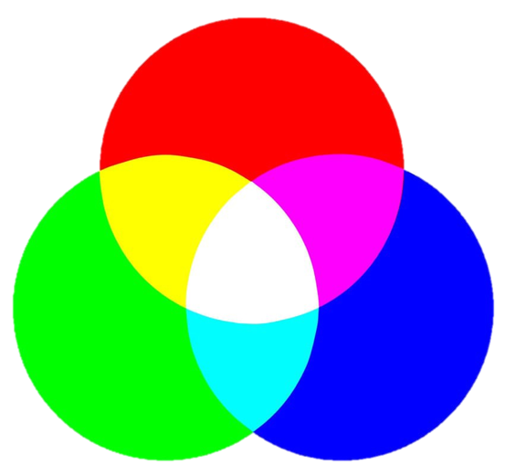
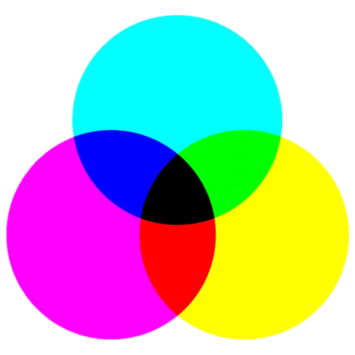
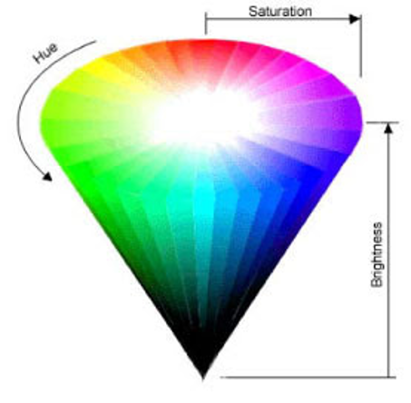
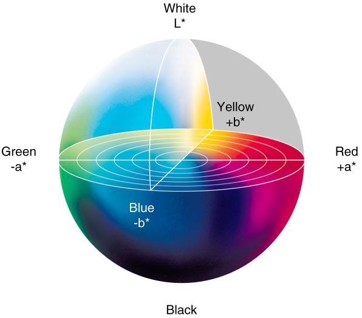

ระบบคอมพิวเตอร์กับการออกแบบงานกราฟิก
ความหมายและความเป็นมาของคอมพิวเตอร์กราฟิก
คอมพิวเตอร์กราฟิก (Computer Graphics) หมายถึง การสร้าง การจัดการ การใช้คอมพิวเตอร์ในการสร้างภาพกราฟิก โดยการนำข้อมูลมาสร้างเป็นภาพ เส้นกราฟ แผนภาพ แผนภูมิ หรืออาจนำภาพมาจากสื่ออื่น ๆ เช่น ภาพจากเครื่องสแกน จากกล้องติจิตอล จากวีดิทัศน์หรือจากภาพยนตร์มาทำกตัดต่อให้เป็นไปตามต้องการหรือตกแต่งภาพให้ดีขึ้น
หลักการทำงานและการแสดงผลของภาพคอมพิวเตอร์กราฟิก
หลักการของภาพที่เกิดบนจอคอมพิวเตอร์ เกิดจากการทำงานของโหมตสี RGB ซึ่งประกสีแดง (Red) สีเขียว (Green) และสีน้ำเงิน (Blue) โดยใช้หลักยิงประจุไฟฟ้าให้เกิดกาวเปล่งแสงของสีทั้ง 3 สีมาผสมกัน ทำให้เกิดเป็นจุดสีสี่เหลี่ยมเล็ก ๆ ที่เรียกว่า พิกเซล (Pixel) ซึ่งมาจากPicture กับ Element โตยกเซลจะมีหลากหลายสี เมื่อนำมาวางต่อกันจะเกิดเป็นรูปภซึ่งภาพที่ใช้กับเครื่องคอมพิวเตอร์มี 2 ประเภท คือ แบบ Raster กับ Vector
หลักการของกราฟิกแบบ Raster
การของภาพกราฟิกแบบ Raster หรือแบบ Bitmap เป็นภาพกราฟิกการเรียงตัวกันของจุดสี่เหลี่ยมเล็ก ๆ หลากหลายสี ซึ่งเรียกจุดสี่เหลี่ยมเล็ก ๆ นี้ว่าพิกเชล (Pixel)ในการสร้างภาพกราฟิกแบบ Raster จะต้องกำหนดจำนวนของพิกเซลให้กับภาพที่ต้องการสร้างถ้ากำหนดจำนวนพิกเซลน้อย เมื่อขยายภาพให้มีขนาดใหญ่ขึ้นจะทำให้มองเห็นภาพเป็นจุดสี่เหลียมเล็ก ๆ หรือถ้ากำหนดจำนวนพิกเซลมากก็จะทำให้แฟ้มภาพมีขนาตใหญ่ ตังนั้น การกำหนดพิกเซลจึงควรกำหนดจำนวนพิกเซลให้เหมาะกับงานที่สร้าง คือ ถ้าต้องการใช้งานทั่วไปจะกำหนดจำนวนพิกเซลประมาณ 100- 150 ppi (Pixel/inch) "จำนวนพิกเซลต่อ 1 ตารางนิ้ว" ถ้าเป็นงานที่ต้องการความละเอียดน้อยและแฟ้มภาพมีขนาดเล็กเช่น ภาพสำหรับใช้กับเว็บไซจะกำหนดจำนวนพิกเซลประมาณ 72 ppi และถ้าเป็นงานพิมพ์
หลักการของกราฟิกแบบ Vector
หลักการของกราฟิกแบบ Vector เป็นภาพกราฟิกที่เกิดจากการอ้างอิงความสัมพันธ์ทางคณิตศาสตร์หรือการคำนวณ ซึ่งภาพจะมีความเป็นอิสระต่อกันโดยแยกชิ้นส่วนของภาพทั้งหมดออกเป็นเส้นตรง เส้นโค้ง รูปทรง เมื่อมีการขยายภาพความละเอียดของภาพจะไม่ลดลง
หลักการใช้สีและแสงในคอมพิวเตอร์
สีที่ใช้ในงานต้านกราฟิกทั่วไปมี 4 ระบบ คือ
1. RGB 2. CMYK 3. HSB 4. LAB
RGB
เป็นระบบสีที่ประกอบด้วยแม่สี 3 สี คือ แดง (Red),เขียว (Green) และสีน้ำเงิน (Blue) เมื่อนำมาผสมกันทำให้เกิดสีต่าง ๆ 'บนจอคอมพิวเตอร์มากถึง 16.7 ล้านสี ซึ้งใกล้เคียงกับสีที่ตาเรามองเห็นปกติ ที่ได้จากการผสมสีขึ้นอยู่กับความเข้มของสี โดยถ้าสีมีความเข้มชันมาก เมื่อนำมาผสมกันจะทำให้เกิดเป็นสีขาว จึงเรียกระบบสีนี้ว่า แบบ Additiveหรือการผสมสีแบบบวก

CMYK
เป็นระบบสีที่ใช้กับเครื่องพิมพ์ที่พิมพ์ออกทางกระตาษหรือวัสดุผิวเรียบอื่น ๆ ซึ่งประกอบด้วยสีหลัก 4 สี คือ สีฟ้า (cyan), สีม่วงแดง (Magenta), สีเหลือง (Yellow) และสีดำไม่ดำสนิทเนื่องจากหมึกพิมพ์มีความไม่บริสุทธิ์ จึงเป็นการผสมสีแบบลบ (Subtractive) หลักการเกิดสีของระบบนี้ คือหมึกสีหนึ่งจะดูดกลืนแสงจากสีหนึ่งแล้วสะท้อนกลับออกมาเป็นสีต่าง ๆ นระบบ RGB

HSB
เป็นระบนสีแบบการมองเห็นของสายตามนุษย์ ซึ่งแบ่งออกเป็น 3 ส่วน คือ
Hue คือ สี่ต่าง ๆ ที่สะท้อนออกมาจากวัตถุแล้วเข้าสู่สายตาของเรา ซึ่งมักเรี ชื่อสี เช่น สีเขียว สีแดง สีเหลือง เป็นต้น
Saturation คือ ความสดของสี โดยค่าความสดของสีจะเริ่มที่ 0 ถึง 100 ถ้ากำหนด Saturation ที่สีจะมีความสดน้อย แต่ถ้ากำหนดที่ 100 สีจะมีความสดมาก
Brightness คือ ระดับความสว่างของสี โดยค่าความสว่างของสีจะเริ่มที่ 0 ถึง 100 ถ้ากำหนดที่ 0ความสว่างจะน้อยซึ่งจะเป็นสีดำ แต่ถ้ากำหนดที่ 100สีจะมีความสว่างมากที่สุด

LAB
เป็นระบบสีที่ไม่ขึ้นกับอุปกรณ์ใด ๆ ( Device Independent) โดยแบ่งออกเป็น 3 ส่วน คือ
"L " หรือ Luminance เป็นการกำหนดความสว่างซึ่งมีค่าตั้งแต่ 0 ถึง 100 ถ้ากำหนดที่ 0 จะกลายเป็นสีดำ แต่ถ้ากำหนดที่ 100 จะกลายเป็นสีขาว
"A" เป็นค่าของสีที่ไล่จากสีเขียวไปสีแดง
"B" เป็นค่าของสีที่ไล่จากสีน้ำเงินไปสีเหลือง

 
|